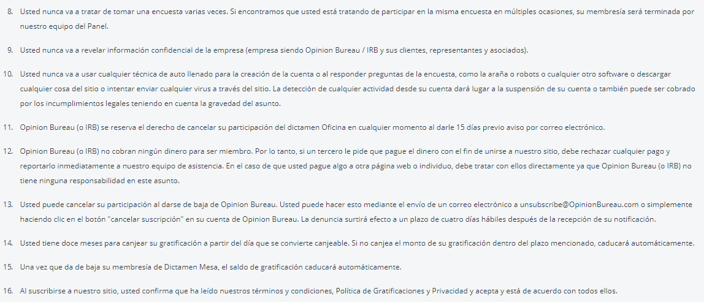
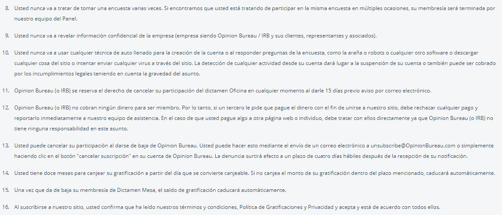

Bezahlte Umfragen


Klicken Sie auf die Bilder für weitere Informationen.
Nachfolgend erläutern wir diejenigen, die unserer Meinung nach die bedeutendsten der 16 Punkte sind, die in den Geschäftsbedingungen des Opinion Bureau festgelegt sind. Wir bitten Sie, sie mit besonderer Aufmerksamkeit zu lesen, damit Sie Unannehmlichkeiten vermeiden, die Ihre Fortschritte in dieses Web.
 

Opinion Bureau behält sich das Recht vor, Ihre Berechtigung zur Teilnahme an jeder Ihrer Umfragen zu prüfen:
Dies zeigt, dass das Opinion Bureau das Recht zulässt, zu entscheiden, ob wir berechtigt sind, auf jede der Umfragen zu antworten. Profil und die Antworten, die wir in verschiedenen Umfragen gegeben haben.Wenn Sie feststellen, dass Sie mehrere Konten bei Opinion Bureau mit unterschiedlichen E-Mail-Adressen erstellt haben, werden alle Ihre Konten gesperrt und der Betrag auf jedem der Konten gewonnen:
Dieser Punkt ist sehr wichtig, denn wenn Das Meinungsamt erkennt, dass Sie mehr als ein Konto mit der gleichen IP-Adresse erstellt haben. Alle werden blockiert und das gleiche gilt für die Gewinne, die Sie in diesen Konten erzielt haben.Die Teilnehmer werden gebeten, in einer Umfrage keine falschen oder gefälschten Antworten zu geben. Alle Antworten müssen ehrlich und ehrlich sein:
Es ist wichtig, entsprechend den Informationen, die wir in unserem Profil eintragen, zu antworten. In den Umfragen werden einige Fragen zweimal oder öfter angezeigt, um zu überprüfen, ob wir jede Frage auf die gleiche Weise beantworten, wenn Sie dieselbe Frage in einer Weise beantworten Anders wird Ihre Teilnahme an der Umfrage enden und Sie erhalten keine Belohnung, wenn Sie geantwortet haben.Sie werden nie versuchen, eine Umfrage mehrmals durchzuführen. Wenn wir feststellen, dass Sie versuchen, mehrfach an der gleichen Umfrage teilzunehmen, wird Ihre Mitgliedschaft von unserem Team gekündigt:
Versuchen Sie niemals, eine Umfrage mehrmals zu beantworten, indem Sie sie beispielsweise in mehreren Tabs in Ihrem Browser öffnen. Dies kann als schnellerer Weg zur Steigerung Ihrer Einnahmen angesehen werden. Was aber passiert, ist genau das Gegenteil, Ihre Mitgliedschaft wird abgebrochen, dh Ihr Konto wird eliminiert und Ihre Gewinne gleichmäßig.Sie werden niemals eine Autolenado-Technik zum Erstellen des Kontos oder zur Beantwortung von Umfragefragen wie etwa Robotern oder anderer Software verwenden oder versuchen, einen Virus über die Website zu senden:
Ähnlich wie in Punkt 8, mit dem Unterschied, dass es sich nicht um den Versuch handelt, mehrmals auf eine Umfrage zu antworten, sondern um es mit Robotern zu tun, die versuchen, Viren über das Internet zu senden, bedeutet dies die Beseitigung Ihres Kontos und Ihrer Gewinne.Wenn Sie Zweifel an den Nutzungsbedingungen des Opinion Bureau haben, denken Sie daran, dass Sie den Abschnitt besuchen können
und wir werden alles tun, um alle Zweifel an dieser und allen Seiten auf dieser Website zu klären.
Um auf die Umfragen zuzugreifen, gibt es zwei Möglichkeiten: Die erste ist eine Benachrichtigung, die die E-Mail erreicht, die Sie in Ihrem Profil registriert haben. In dieser E-Mail erhalten Sie einen Link, der Sie zur Umfrage führt. Das zweite Formular finden Sie auf der Seite Opinion Bureau, oben, wie Sie in der folgenden Erfassung sehen:

Wenn Sie eintreten, finden Sie die Umfragen, die verfügbar sind, um in unserem Fall das erste Mal zu reagieren, als wir eintraten, erschienen wir wie folgt:

Vervollständigen Sie Ihr Profil
, empfehlen wir Ihnen, nach der Registrierung bei Opinion Bureau die ersten Schritte zu machen. Dadurch wird es Ihnen leichter fallen, die meisten Umfragen zu erhalten, die Sie erhalten, Ihre Profilinformationen zu vervollständigen, auf die Option zu klicken
Es gibt fünf Kategorien, die Sie so weit wie möglich ergänzen sollten, um die Wahrscheinlichkeit zu erhöhen, auf die Umfragen antworten zu können. Es ist erwähnenswert, dass Sie möglicherweise nicht alle Kategorien zu 100% abschließen können, da einige Fragen beantwortet werden können. die Antworten, die Sie auf eine oder mehrere frühere Fragen gegeben haben.

Seien Sie geduldig, wenn Sie einige Umfragen nicht beantworten können
, Sie werden feststellen, dass Sie nicht in der Lage sind, auf alle Umfragen zu antworten, wir möchten Ihnen nicht sagen, dass Sie alle beantworten können, weil wir wissen, dass nicht alle Profile auf eine Umfrage antworten können. alles, was dir einfällt, sowie einige, die du nicht beantworten kannst, in anderen wirst du in der Lage sein und du kannst es tun.
Liefert konsistente Informationen
, versuchen Sie sich an die von Ihnen angegebenen Informationen zu erinnern, da Sie in einer Umfrage zwei- oder mehrmals die gleiche Frage erhalten können, um zu überprüfen, ob die Antwort auf diese Frage immer dieselbe ist. Andernfalls können Sie die Umfrage nicht beenden und Sie erhalten nicht die entsprechende Zahlung.
Achten Sie auf E-Mail-Benachrichtigungen
, andernfalls empfehlen wir Ihnen, die auf der Website des Opinion Bureau verfügbaren Umfragen ständig zu überprüfen, da Umfragen bei Erreichen der erforderlichen Anzahl von Befragten verschwinden. Es gibt also keine feste Zeit, in der die Umfrage durchgeführt wird verfügbar.

Wenn Sie Ihr Guthaben im Meinungsbüro einsehen möchten, müssen Sie nach der Anmeldung auf Ihr Profilbild oder das Optionszeichen auf der rechten Seite klicken und dann die Option auswählen

Wie Sie sehen können, sehen Sie auf der rechten Seite den Betrag, den Sie bisher gesammelt haben. Wir müssen klären, dass diese Erfassung zum Zeitpunkt der Registrierung vorgenommen wurde. Aus diesem Grund haben wir nur die ersten 6 USD, von denen wir bereits gesprochen haben.
In Bezug auf die wichtigen Aspekte der Zahlung beträgt der Mindestbetrag für die Rücknahme 10 US-Dollar oder den Gegenwert in verschiedenen Währungen.
Wenn Sie bereits die 10 USD gewonnen haben und Ihre Gewinne abheben möchten, sollten Sie der Option zustimmen

Sie finden sich in diesem Modul, in dem Sie die Einnahmen, die Sie gesammelt haben, und den Betrag, den Sie zurückziehen können, angeben. Wir müssen klären, dass nicht alles, was Sie erhalten, abgehoben werden kann, zum Beispiel, was Sie mit einer Umfrage verdienen, ist 45 Tage nach Beantwortung der Umfrage abziehbar.

Sobald Sie mindestens 10 USD im Auszahlungsbetrag haben, klicken Sie auf den Button, um den Auszahlungsprozess zu starten
Tage später erhalten Sie eine E-Mail, um zu bestätigen, dass Sie die Auszahlung beantragt haben. Sie müssen die Zahlungsmethode erneut auswählen. Wenn Sie PayPal gewählt haben, werden Sie aufgefordert, Ihre Informationen über Ihr PayPal-Konto einzugeben.
Wenn Sie Ihre PayPal-Kontodaten eingegeben und bestätigt haben, haben Sie den Abhebungsprozess bereits abgeschlossen. Sie müssen nur 2 bis 4 Tage warten, bis die Transaktion abgeschlossen ist.
Im Opinion Bureau können Sie Ihre Gewinne auch über das Empfehlungssystem erhöhen, auf das Sie über das Hauptmenü zugreifen können, in der Option


Das Empfehlungssystem ist sehr einfach, denn jeder Ihrer Freunde kann sich auf der Plattform registrieren und auf die erste Umfrage antworten, für die Ihr Freund 6 USD erhält. Sie erhalten 1 USD, es spielt keine Rolle, ob Ihr Freund noch Umfragen beantwortet oder nicht , erhalten Sie diesen ersten Dollar.
Wenn mein Land nicht verfügbar ist, kann ich VPN verwenden?
Wir empfehlen es nicht, da die Anwendungen, die IP-Verbindungen verschiedener Länder bereitstellen, Ihrem Konto und der anderer Personen die gleiche IP-Adresse zuweisen können, Opinion Bureau, es könnte die Löschung Ihres Kontos verursachen und Sie würden die Gewinne verlieren, die Sie erhalten haben, aber denken Sie daran, dass, wenn Sie einen Dienst von VPN verwenden möchten, dies in Ihrer Verantwortung liegt und Sie riskieren, Sanktionen zu haben.
Wie oft kann ich mich zurückziehen?
Vergessen Sie nicht, dass Sie zwischen dem Zeitpunkt, zu dem Sie die Abhebung beantragen, und dass Ihr Geld PayPal oder eine andere Zahlungsmethode erreicht hat, 5 bis 20 Tage in Anspruch nehmen, in denen Sie Sie können einen Rückzug beantragen.
Ist die Zahlung nur in USD?
Die Währung, mit der die Zahlung getätigt wird, hängt von Ihrem Land ab. Wenn Sie beispielsweise aus Spanien kommen, wird die Zahlung in Euro erfolgen. Wenn Sie aus den USA kommen, wird die Zahlung in USD erfolgen.
Wie lange dauert es, die Gewinne zurückzuziehen?
Zwischen Ihnen und dem Erhalt der Bestätigungs-E-Mail kann es zwischen 1 und 15 Tagen dauern. Sobald Sie Ihre PayPal-Daten bestätigt haben, kann es 2 bis 4 Tage dauern, bis das Geld auch in Ihrem PayPal-Konto erscheint. dass die Zeit, zwischen der Sie die Rücknahme beantragen, und dass Sie das Geld erhalten, zwischen 1 und 20 Tagen variieren kann.
Wie viele Umfragen am Tag?
Aus unserer Erfahrung können wir Ihnen sagen, dass es einige Tage zwischen 1 und 3 Umfragen pro Tag gibt, obwohl manchmal keine von ihnen den ganzen Tag ankommt. Wir empfehlen daher, dass Sie häufig eingeben, um auf möglichst viele Umfragen zuzugreifen.
Ich habe kein PayPal-Konto
Kein Problem, als erstes müssen Sie auf die PayPal-Seite gehen, den Link für Ihre eigene Sicherheit nicht bereitstellen. Dort finden Sie oben die folgenden Optionen:

Hier, nach einem Klick auf

Später werden Sie nach Geschlecht und Geschmack gefragt und danach nach Ihren persönlichen Daten. Sie werden Sie dann fragen, ob Sie Ihre Bankkarte zuordnen möchten, die Sie verschieben können, wenn Sie dies wünschen, indem Sie auf